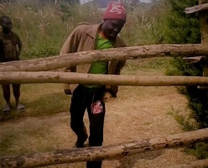
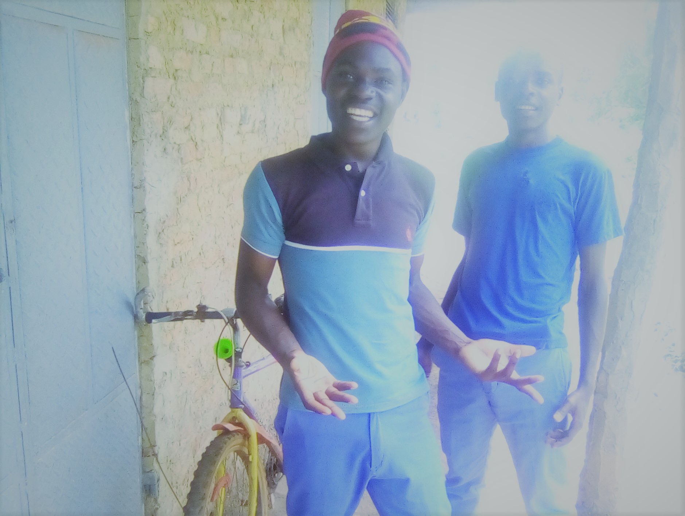

CSS
Javascript
MYSQL
PHP.

Science is his next hobbie after coding. HE used to love chemistry so much and the other space sciences.
He created a utube channel where he spreads his mood of science.
Lucky Dot pro uganda is a young generation boy who grew up in Kijenga village in Kiburara subcounty .
HE is known by His original names Ahumuza Ronney Achaali Alibaroho
He was born to MR.KARUGABA JOHN and NYAKATO GORRET Of Kabasanja.
IN january 2023 it was a year that was too worst for him. HE WAS harrased and almost left his home.
He started making contents on tiktok with his friends and relatives.
HE used to create thesecontents with just his phone.
These videos wer laiter uploded to his official tik tok accont Lucky Dot ug

He started in St.kizito Mordern School Where is started MIDDLE CLASS and laiter he was promoted to top class that same year because he was 6yrs old.
HE graduated for top class in 2011. in 2017 he was promoted to P.6 and was changed from his former school to Mpinga primary School where he completed P7 class.
In senior one he joined Samling Kichwamba Peas High School. where he was expelled while in senior three last term. and joined Rusekere Secondary school IN KIJURA f/portal city.

He has been avery good fun of ICT .he could cooperate with his colleges in order to create alarge computer skills.
He started by loving computers so much while she was at Samling kichwamba Peas.
He started by learning Computer languages two yrs ago.
He published his example website UPDF Uganda
Coding is number one hobbie of LUCKY DOT .This is because of him being a fun of ICT.
HTML
CSS
Javascript
MYSQL
PHP.
Science is his next hobbie after coding. HE used to love chemistry so much and the other space sciences.
He created a utube channel where he spreads his mood of science.
HI my legends thanks for visiting this site of mine. I thank you so much for your cooperation.
I thank my fellow friends of mine both pragramers and non programers.
I thank google ,youtube,and facebook for being my friends and giving me high skills.